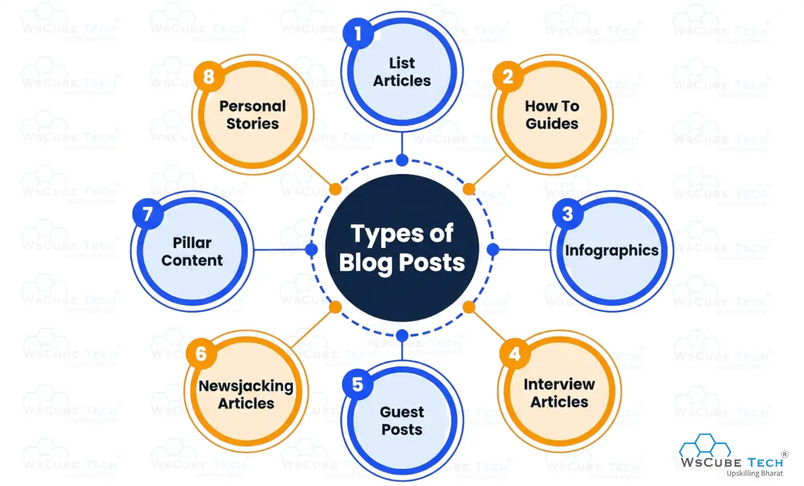
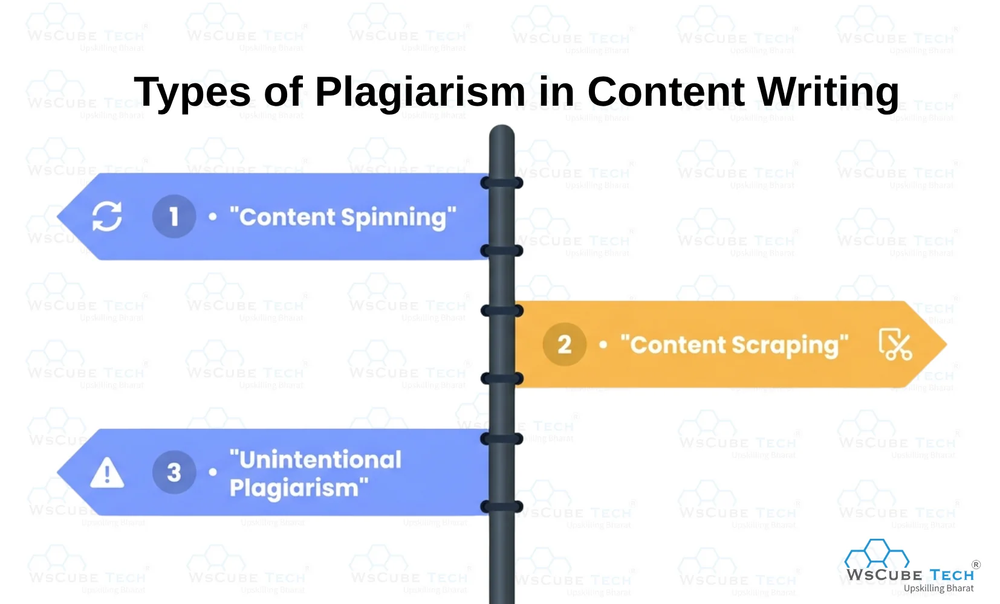
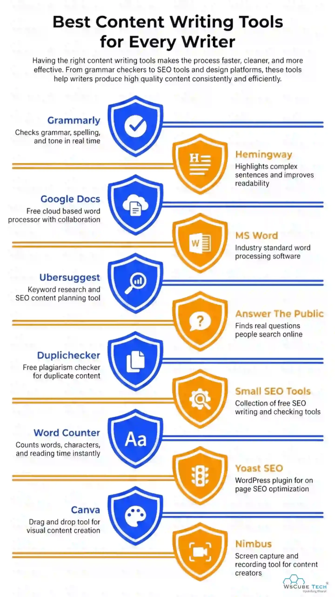

Content writing is one of the most in-demand skills in digital marketing and online businesses. Companies hire content writers to create blogs, website content, social media posts, and SEO-friendly articles that attract readers and improve online visibility.
To help you prepare for interviews, this guide covers 100+ Content Writing Interview Questions and Answers for freshers and experienced candidates. These questions will improve your understanding of writing, SEO, research, grammar, and content strategy for 2026 job opportunities.
You can also join WsCube Tech’s Content Writing Course to learn practical writing, SEO, and content marketing skills from industry experts.
Content Writing Interview Questions for Freshers & Interns
If you are an absolute beginner, then the first thing to do is know the basics and fundamentals of this skill. To help you with this, here are some of the top content writer interview questions and answers for freshers. You can also go through these even if you are appearing for an internship opportunity.
1. What is content writing?
Content writing is a skill that requires you to write different forms of content, especially for the purpose of digital marketing.
It can be the captions that you read on social media posts, articles that you read on blogs, the content on web pages, landing pages, product descriptions on eCommerce websites, etc.
2. What is the role and importance of content writing?
Below is a list of the primary roles and benefits of content writing:
- The most effective way to get your business in the digital sphere.
- A communication channel to reach customers.
- Audience engagement and retention.
- Providing information.
- Boost SEO.
- Cater to newspapers and magazines.
- Establish credibility and validation.
- Creating books
3. What is web content?
The content written for a website’s pages is called web content or website content. For example, the content on the homepage, service/product pages, company pages, etc. are examples of web content.
The purpose of web content writing is to provide audience information about the company, its products & services, benefits & features, specifications, and much more. The main motive of web content is to bring the audience to the website and convert it into customers.
This is among the top web content writers to interview questions for freshers. Hence, you must know its answer and should be able to explain it with an example.
4. What are the landing pages?
It is a type of web page where the audience lands from paid ad campaigns, email marketing campaigns, or other sources.
It is called a landing page because this is where the audience lands by clicking the link through an ad or other digital marketing campaigns.
Landing pages are generally targeted for a specific product or service, with the core purpose of conversion. Here, mostly the focus is on copywriting over SEO. Trust signals, scarcity, urgency, and other similar factors are taken care of on a landing page to boost conversions.
5. What are the different types of content?
The different forms of content include:
- Article and blog posts
- Web content
- Copywriting
- Social media content
- SEO content
- eBooks
- Press releases
- Professional emails
- News writing
6. Do you know about any content management systems?
There are several content management systems (CMS), like WordPress, Joomla, Drupal, Magento, etc. However, I have worked only on WordPress.
7. What is the difference between content writing and copywriting?
The difference between copywriting and content writing lies in the purpose. The core purpose of content writing is to offer information, instructions, or educate the audience.
On the other hand, copywriting is done primarily to drive sales for the business. It is like a salesperson's writing content.
While content writing can also help in driving sales, it is not the primary motive. Copywriting is more persuasive than content writing.
| Examples of Content Writing | Examples of Copywriting |
| Blog posts | Landing pages |
| News writing | Ad copies for PPC campaigns |
| Tutorials | Social media ad campaigns |
| eBooks | Product pages |
| Newsletters | Sales emails |
| Press releases | Website sales copy |
8. What is the difference between content writing and creative writing?
There are several differences between creative writing and content writing, as shown below:
| Content Writing | Creative Writing |
| It is factual | Fictional, non-fictional, and lyrical |
| Informational, instructional, and persuasive | Entertaining, expression of thoughts and feelings |
| For a targeted audience | For masses, or general audience |
| Follows the content and marketing strategy | Freestyle writing |
| Example: Website content, product descriptions, blogs, ad copies, etc. | Example: Poetry, novel, song lyrics, movie scripts, etc. |
9. What is editing? Explain in simple terms.
Editing is the art of enhancing the quality of the content by working on its organization, grammar, presentation, and ensuring that the context of the content is conveyed in the best possible manner.
In editing, the parts of the content may be removed, rewritten, or added. It is a crucial part of content writing and a crucial skill that every content writer should have.
10. What is proofreading?
Proofreading is the process of corrective misspellings, typing errors, punctuations, and other surface issues in a piece of content.
The proofreading skills require command over the language in which the content is written. Its purpose is to give the final touch to the content before proceeding with it for publishing.
11. Why did you choose to become a content writer?
This is among the most common content writing interview questions for freshers. You need to answer it well by explaining the reasons behind choosing to build a career in content writing.
For example, you can say that writing is something that you enjoy or you are passionate about.
12. Do you read books? What are some of your favorites?
Usually, people who have an interest in writing tend to have an interest in reading as well. If you are one of this sort and are asked about your favorite books or authors, mention the top books and writers that you love to read.
This is one of the top content writing interview questions for freshers. The good thing about it is that you can answer it without preparation.
13. What is plagiarism in content writing?
When you present someone else’s content or work as your own, it is called plagiarism. In content writing, copying a piece of content and using it in your own content is considered plagiarism.
The following can be counted as plagiarism in content writing:
- Using someone’s content without proper credit
- Using ideas of other people and presenting them as your own
- Copying content from other websites and using it on your website
- Sharing wrong or misleading information about the source of a quotation
- Not giving proper credit to the data/information to the original sources
- Using someone’s else quotations without giving credit
14. Which are the free plagiarism checker tools?
Some of the best tools to check plagiarism for free are:
15. What is content spinning? Why must you avoid it?
The process of using automatic content generation tools to create a second copy of the content is called content spinning. Here, the tools change certain words with their synonyms or alternate words and generate new content.
Content spinning can also be done manually if a person rewrites a piece of content by simply changing the words in a piece of content with their synonyms.
Recommended Professional Certificates
AI-Powered Digital Marketing Course
Professional Certification in AI
Performance Marketing Bootcamp
SEO Specialist Bootcamp
16. What is freelance writing?
Freelance writing or freelance content writing is a profession where a content writer works with clients on a contract basis. In this case, the content writer finds the projects on his own, decides the rates with the client, and works on projects without working as a full-time employee.
A freelance writer doesn’t have any fixed working hours like a job. He/she can choose to work anytime or anywhere, but the end goal is to meet deadlines and deliver the projects on expected timelines.
Moreover, the salary of a freelance content writer is not fixed. He/she can earn according to the rates offered to clients, the amount of work done, etc.
17. What is Grammarly? Have you used it?
Grammarly is one of the most popular content writing tools that help in creating error-free content. It is an AI-based writing assistant. Grammarly is the preferred choice of content writers because it shows corrections, suggestions, etc. related to grammar, spellings, word choices, sentence structure, and more.
The free version of Grammarly checks for:
- Grammar
- Spellings
- Punctuation
- Word count
18. What is the difference between Grammarly Free vs Premium?
The core differences between Grammarly's free and premium versions are that the latter allows you to check plagiarism and offers advanced grammar suggestions.
Here is the tabular comparison between Grammarly Free vs Premium
| Free Features | Premium Features |
| Basic grammar check | Checks for in-depth grammatical errors |
| Detects spelling mistakes | Suggestions for clarity and readability improvement |
| Detects punctuation errors | Sentence structure editing |
| Shows grammar score | Customize the tone and set goals |
| Plagiarism Checker for up to 100K characters in one-go | |
| Customer Support | |
| Support |
Behavioral Interview Questions & Answers for Content Writers
Behavioral content writer interview questions help employers evaluate communication, adaptability, creativity, teamwork, and problem-solving skills while understanding how candidates handle real workplace situations professionally.
19. Describe a time you overcame writer’s block.
While working on a blog series, I struggled to develop fresh ideas. I stepped away, researched competitors, reviewed audience comments, and created a simple outline. Breaking the topic into smaller sections helped me regain momentum and complete the content before the deadline.
20. Tell me about a time you handled critical feedback on your writing.
An editor once said my article sounded too technical for beginners. Instead of taking it personally, I simplified the language, added examples, and improved readability. The revised article performed much better in engagement and user retention.
21. Describe a situation where you had to meet a tight deadline.
A client needed three SEO articles within 24 hours due to a campaign launch. I prioritized research, used structured outlines, and focused on accuracy first. I completed all articles on time without compromising quality.
22. Tell me about a time you managed multiple writing projects together.
I handled website content, social media captions, and email campaigns simultaneously. I used a content calendar and task prioritization method to track deadlines. This helped me deliver every project on schedule.
23. Describe a time you had to write about a topic you knew little about.
I was assigned a finance-related article despite having limited knowledge. I researched reliable sources, studied competitor blogs, and consulted subject experts. The final content was accurate, informative, and appreciated by the client.
24. Share an example of adapting your writing style for different audiences.
For a tech startup, I wrote professional B2B blogs, while for a lifestyle brand, I created conversational social media content. I adjusted tone, vocabulary, and structure based on the target audience and platform.
25. Describe a time you faced disagreement with an editor or client.
A client wanted keyword stuffing for SEO, but I explained how it could hurt readability and rankings. I suggested a balanced optimization strategy, and the final article ranked well while maintaining quality.
26. Tell me about a mistake you made in content writing and how you fixed it.
I once published content with outdated statistics. After noticing the issue, I immediately updated the article, verified all sources again, and created a fact-checking checklist to avoid similar mistakes in future projects.
27. Describe a time when your content performed exceptionally well.
Wrote an SEO-focused blog that ranked on the first page of search engines within two months. I achieved this by using strong keyword research, clear formatting, and user-focused content strategies.
28. Tell me about a time you had to handle stressful revisions.
A client requested major revisions close to the publishing deadline. I stayed calm, clarified priorities, and focused on the most impactful edits first. The updated content was approved without delaying publication.
29. Describe a time you worked collaboratively with a marketing or SEO team.
I collaborated with SEO specialists to optimize blog content for search rankings. We aligned keyword strategy, internal linking, and headings, which improved organic traffic significantly.
30. Tell me about the time you had to persuade someone to use your writing.
I created product descriptions for an e-commerce brand that focused on customer pain points and benefits instead of just features. This improved click-through rates and increased conversions.
31. Describe a situation where you had to learn a new writing tool quickly.
My company shifted to a new CMS platform. I spent time exploring tutorials, practicing drafts, and learning shortcuts. Within a week, I became comfortable and trained other team members as well.
32. Tell me about a time when you received unclear instructions for a project.
A client provided vague requirements for website content. I prepared a brief questionnaire, clarified tone and goals, and confirmed expectations before writing. These reduced revisions and improved communication.
33. Describe a time you improved content performance through data or analytics.
I noticed high bounce rates on blog pages through analytics tools. I improved introductions, added subheadings, and optimized readability. As a result, the average time on the page increased noticeably.
Upcoming Masterclass
Attend our live classes led by experienced and desiccated instructors of Wscube Tech.


Advanced Content Writing Interview Questions and Answers for Experienced (2026)
If you have some experience as a content writer, whether in a full-time job or as a freelance, you must be prepared for the following content writing interview questions for experienced. Also, go through the above questions as well for solid preparation.
34. Explain how you use topic clustering in content strategy.
I use topic clustering by creating one pillar page around a broad keyword and linking multiple related subtopics to it. For example, a pillar page on “Digital Marketing” can connect to blogs about SEO, PPC, social media marketing, and email marketing. This improves internal linking, boosts topical authority, and helps search engines understand website structure.
35. Describe a time you built a content calendar.
I created a 3-month content calendar for a travel brand by researching seasonal trends, keyword opportunities, and campaign goals. I scheduled blogs, social posts, and email content in advance, which improved consistency and reduced last-minute workload.
36. How do you prioritize topics while planning a content calendar?
I prioritize topics based on search volume, user intent, business goals, trending topics, and competitor gaps. I also balance evergreen content with seasonal or trending articles to maintain consistent traffic growth.
37. Explain the AIDA framework and how you apply it in writing.
AIDA stands for Attention, Interest, Desire, and Action. I use strong headlines to grab attention, engaging storytelling to maintain interest, persuasive benefits to create desire, and clear CTAs to encourage action like signing up or purchasing.
38. Describe a successful campaign where you used AIDA effectively.
For an online course landing page, I used a bold headline to capture attention, highlighted career benefits to build interest, added testimonials for desire, and ended with a limited-time enrollment CTA. This increased conversion rates significantly.
39. Tell me about a time you improved engagement through content strategy.
I noticed users were leaving blogs quickly, so I added better introductions, shorter paragraphs, FAQs, visuals, and interactive CTAs. This increased average session duration and improved user engagement.
40. How do you create a topic cluster for SEO?
I start with keyword research to identify a primary topic, then group related long-tail keywords into subtopics. I connect all supporting articles back to the pillar page through internal linking to improve SEO authority.
41. Describe your process for planning monthly content.
I analyze analytics data, review keyword trends, identify audience interests, and align topics with marketing campaigns. Then I organize publishing dates, content formats, and promotion strategies in a calendar.
42. Tell me about a time your content strategy failed and what you learned.
I once focused heavily on high-volume keywords without understanding audience intent. Traffic increased, but engagement stayed low. I learned to prioritize user intent and relevance over traffic alone.
43. How do you balance SEO optimization with reader engagement?
I naturally place keywords while focusing on readability, storytelling, and useful information. I avoid keyword stuffing and ensure the content feels valuable and conversational for readers.
44. Describe a content funnel strategy you have used.
I created top-of-funnel blogs for awareness, comparison guides for consideration, and landing pages with strong CTAs for conversions. This helped guide users through the customer journey effectively.
45. How do you measure the success of a content strategy?
I track metrics like organic traffic, bounce rate, engagement time, keyword rankings, conversions, and lead generation. I use tools like Google Analytics and Search Console to analyze performance.
46. Explain how audience research influences your content planning.
Audience research helps me understand pain points, interests, and search behavior. This allows me to create content that directly answers user questions and improves relevance and engagement.
47. Describe a time you repurposed content successfully.
I converted a high-performing blog into LinkedIn posts, Instagram carousels, and an email newsletter. Repurposing extended reach and increased traffic across multiple platforms.
48. How would you plan content for a new website from scratch?
I would begin with competitor research, keyword analysis, and audience profiling. Then I’d build topic clusters, create pillar pages, develop a content calendar, and focus on consistent SEO-friendly publishing.
49. What are the main qualities of good content?
Below is a list of the top qualities of good content writing:
- Engaging
- Offers value
- Authentic and credible
- Comprehensive
- Includes CTA
- Uniqueness
- Optimized for SEO
50. How to decide the tone of content?
For deciding the tone of the content we are writing, the first thing to do is know exactly who is going to read that content. In simple terms, we need to understand who the target audience for a particular article is, web page, eBook, case study, etc.
When you know the audience, you can understand the level of their understanding, words they are familiar with, their age group, etc. On the basis of that, we decide the content tone, whether to keep it formal, casual, or semi-formal.
For example, if the audience of my content is entrepreneurs, it is better to keep the tone formal and professional.
Another important thing to take care of while deciding the tone of the content is to know about your brand values.
Explore More on Interview Guides
51. What can you do to make your content look more authentic?
The internet is full of oceans of content. To stand out from the competition and make an impact, you must create authentic content in a consistent manner.
Here are some quick tips to write authentic content:
- Understand the target audience of the content you are writing. Know their expectations from your content, what you can do to meet their intent, etc.
- Write in an interactive manner while showcasing your expertise in the field.
- The tone of the content should sound confident to win the audience's trust.
- Respond to comment on the posts.
- Use relevant statistics in the content from trusted sources.
- Follow white-hat SEO practices.
- Use tools like Grammarly to write error-free content. Common grammatical mistakes can lead to losing the audience’s trust.
- Perform thorough research before writing a piece of content. You can also include unique quotes from experts in your field.
- Include visual elements in the form of graphs, screenshots, or infographics.
- Use a fresh perspective on the topic.
- Ensure that your content is completely original.
52. Being a content writer, what are the things that you enjoy the most?
Content writing is a skill-based job. Most people choose to build a career in content writing because they enjoy the art of writing.
However, once you are in this profession, you need to write about a wide variety of topics. If you enjoy this part of the job, you can mention that you love to explore new topics. Content writing provides you with the opportunity to work on a broad range of topics.
Furthermore, the role of writing content is to offer information and educate users. If this is something you love about the content writing job, do respond accordingly to such B2B content writer interview questions.
53. Have you created the blog and content plan for a website?
This is one of the most asked content writing interview questions for experienced writers. If you have worked for multiple organizations or clients, you might have got the chance to create a blog plan or other content plan.
If you have crafted the blog strategy for a website, mention the site and what were the core elements of your strategy, etc. In case you didn’t get the opportunity to create a content plan, you can simply say no.
54. What are the different types of blog posts?
There are several types of articles or blog posts in content writing, including:

a) List articles
Examples:
- Top 10 Free SEO Tools
- 15 Best WordPress Themes
- Top 20 Benefits of Reading Books
- 36 Most Famous Tourists Attractions in Rajasthan
b) How To Guides
Examples:
- How to learn Digital Marketing?
- How to Make Pizza at Home?
- How to Download Instagram Reels?
c) Infographics
Graphic-based articles or guides
Example:
The State of SEO in 2021 [Infographic]
d) Interview Articles
Example:
Without digital marketing, a website or app is as good as a brochure. – Kushagra Bhatia
e) Guest Posts
Articles contributed to a blog or site as a guest author or contributor.
f) Newsjacking Articles
Articles written to take advantage of trending news stories or events for promoting the business and its services/products.
g) Pillar Content
A comprehensive and detailed piece of content with subtopics having the scope of getting broken into individual topics.
h) Personal Stories
Examples:
- My YouTube Journey from 0 to 20 million Subscribers
- Aamir Khan Life and Success Story
55. What are infographics and why are they important?
An infographic stands for information graphics. As the name suggests, it is a graphical or visual presentation of information.
In infographics, we can include pieces of content, charts, graphs, images, etc., and present the content in a visually appealing manner.
These play a crucial role in content marketing because infographics are easy-to-understand and engaging. Users are more likely to consume the content on it compared to simple plain text content.
56. What is the difference between editing and proofreading?
There are a number of differences between proofreading and editing. When such content writer interview questions are asked, explain the differences in simple terms so that the interviewer can be sure that you actually understand both things.
Here is a quick list comparison between editing vs proofreading:
| Editing | Proofreading |
| Performed on the first draft of the content | Performed once editing is done |
| Fixing core issues | Fixing surface issues |
| May decrease/increase the word count of the content | Usually doesn’t hamper the word count much |
| Improves overall quality of the content | Makes good content error-free |
| Longer turnaround time | Shorter turnaround time |
57. How to edit and proofread your content?
Here are some of the best proofreading and editing tips for content writers:
- Understand the overall purpose of the content
- Edit before proofreading
- Take a pause after writing a piece of content, and then start editing
- Read slow and read every word
- Read the content backward
- Proofread out aloud
- Keep sentences shorter (max 20 words)
- Keep paragraphs shorter (max 4-5 sentences)
- Check that all verb tenses are consistent in the content
- Read the content at least 5 times
- Give a dedicated reading slot for checking punctuation
58. What is the importance of readability in content writing?
Readability helps in presenting the content in the most efficient manner to the audience. The better the content readability, the clearer you can convey your message, ideas, or offer information.
Here is a list of quick reasons why readability is important:
- Making content clear
- Making content easy to understand
- Boost SEO
- Make the audience read the content
- Better content engagement
59. How to improve the readability of content? Share some tips that you follow.
These are some of the best tips to improve content readability:
- Use easy and familiar words in the content
- Keep sentences and paragraphs short
- Break up the content with headings, subheadings, and bullet points
- Keep the audience in mind while writing (their level of understanding, words they’re familiar with, etc.)
- Use visual elements (images, graphics, screenshots, videos, etc.)
- Make use of transition words for better writing flow
- Take help of editing and proofreading tools like Grammarly and Hemingway
60. How many years of experience do you have in content writing?
You must be prepared for this type of content writing interview questions for experienced. Whether you have 1 year of experience or 5 years of experience, this question is usually asked in a job interview.
Here, you will obviously mention the number of years. But you should also talk about the companies you have worked for, your core niches, and the types of content.
61. Please share some web content writing tips that you follow to curate better content.
I follow these tips to write excellent web content:
- Focus on benefits over features
- Persuade the audience to act
- Use targeted keywords
- Write short sentences
- Follow the inverted pyramid approach
- Write most of the content in active voice
- Avoid weak words
- Keep the content concise and clear
62. What is an inverted pyramid in content writing?
The inverted pyramid style in content writing is a technique used to prioritize the most important information in the content and structure the content accordingly.
This approach follows an upside-down structure, where the top section on a page includes the most important information; the next section includes the second-most important content, and the last section includes the least important information.
The inverted pyramid approach works great in content writing as it grabs the interest of the users when they start at the top. Then it brings them down to consume more content.
63. What was your role in the last company?
In such content writing interview questions for experienced, share exactly what your tasks were and related to which niche.
For example, you can say that you worked on the company’s monthly blog posts, web content, social media captions, weekly newsletters, etc. You can elaborate on the answer as per your experience and roles in the previous organization.
64. Who do you follow to improve your content writing skills?
The answer to this question varies for every person. However, you can mention anyone who you follow for content writing tips, suggestions, trends, and more.
For example, I follow Copy blogger to improve my content writing skills.
65. How many words can you write per day?
There is no fixed number of words that a content writer can write on a daily basis. It is because it depends on the niche, topic, and amount of research required.
For example, a technical topic will need more time compared to a simple topic on solo travel tips.
Moreover, every writer has his/her own capabilities and skill levels. On average, around 2000-2500 words can be written daily if at least 8 hours of work is done.
66. What are your key strengths as a content writer?
In this type of interview questions on content writing, talk about your core strengths as a writer. Not all content writers have the same strengths. So, you need to identify what your strengths are.
For example, you can mention that you meet deadlines, perform thorough research on the topic before writing, or have the ability to switch between different forms of content.
67. What is a newsjacking article?
The newsjacking articles are written to take advantage of trending news stories or events for promoting the business and its services/products.
For example, in 2021, a new ransomware attack called the JBS attack majorly impacted the businesses across supply chain businesses in the US and Australia. It was a trending news story and event.
A cybersecurity firm named Acronis covered an article related to this attack and offered in-depth information related to it. Eventually, it promoted cyber protection solutions to avoid such ransomware attacks. This newsjacking article was a great move by Acronis to bring the targeted audience to the site and pitch them the product they need.
68. Where do you find free images for your articles? Name the top 5 websites.
Some of the top free websites for stock-free images are:
69. How much plagiarism is allowed in content?
The content we publish must be 100% unique. While there are some exceptions where tools may show plagiarism, it is okay to skip it. But content writers must know what can be avoided.
For example, proverbs and idioms can be used without worrying about plagiarism. Common knowledge like “Sachin Tendulkar is called the God of cricket”, etc. will not be counted in plagiarism, even if the tools show it is plagiarized. So, one must have an idea of what can be ignored and what cannot be done.
Check Out Our Most Popular Marketing Courses
70. What are the different types of plagiarism in content writing?
There are three types of plagiarism that we need to avoid while writing content:

a) Content Spinning
It is the process of using automated tools or content spinning tools to generate a second copy of unique content. Moreover, if you copy the content of others and manually rewrite it by just changing some words and using synonyms is also content spinning.
b) Content Scraping
When the majority of your content is copied from other websites, it is called content scraping.
c) Unintentional Plagiarism
When you write a piece of content on your own without copying anything from other sites, but some sentences or part of the content matches other sites, it can lead to unintentional plagiarism. To avoid it, you must use plagiarism checker tools.
71. Which premium plagiarism checking tools have you used?
Some of the most popular premium plagiarism checking tools include Copyscape, Grammarly, UniCheck, ProWritingAid, and Quetext.
In such content writing interview questions for experienced, you should mention the tools you have used. Generally, companies or individuals opt for Grammarly or Copyscape.
72. What can be the consequences of plagiarism in content?
Content plagiarism can lead to the following issues or consequences:
- Copyright issues
- Loss of website ranking
- Penalties from Google
- No AdSense Approval
- Loss of clients
- Loss of reputation
73. What are some good tips to avoid plagiarism in content writing?
Here is a quick list of tips to avoid content plagiarism:
- Never think of copy-pasting from other sites
- Write and present the content in your own words
- Note down the points during research and close the tabs/windows in the browser once done
- Never think of content spinning
- While using quotes from others, make sure to use quotation marks and give credit to the source
- Use reliable plagiarism checker tools to ensure that the content is 100% unique.
74. What are some of the best content research tips?
Usually, I follow these tips for content research to create authentic and high-value content:
- Make the most out of Google Autocomplete suggestions
- Check the ‘Related Searches’ section on Google’s search engine results page (SERP)
- Go through the top results of competitors to understand the topic and how you can write better than them
- Find relevant data by searching for research reports and statistics
- Use Quora to find answers from experts
- Browse YouTube videos of experts
75. Why should you write catchy headlines?
There are several benefits of writing interesting and catchy headlines:
- More clicks in SERP
- Increased website traffic
- More clicks on social media
- Social media shares
- Better CTR (click-through rate)
- Better Email Marketing Results
76. Please share some awesome tips to write catchy headlines?
Here are several crucial tips to write better headlines:
- Use numbers and stats in the headline
- Keep the headline accurate and specific
- Use powerful words to evoke emotions and curiosity
- Show scarcity
- Write 5+ headlines and finalize one.
77. What tips do you follow to write better product descriptions?
I follow this product description writing tips:
- Understand the audience of the specific product
- Know the most valuable features of the product to highlight
- Write a descriptive headline
- Include product benefits in the introduction
- Use natural language and tone
- Use words familiar to the product users
- Include power words to drive sales
- Create bullet points list of features and benefits
- Optimize it for SEO by including keywords in the headline, body content, and subheadings
78. What are the most common content writing mistakes?
Following is a quick list of content writing mistakes that are so common:
- Not double-checking the content after writing
- Taking images directly from search results
- Not understanding SEO
- Not Conducting Thorough Research
- Obvious advertising in content
- Pointless word count
- Not checking plagiarism
- Ignoring CTA
- Not deciding on a niche for career
- Not keeping up with latest trends in SEO and digital marketing
79. Have you worked as a freelance content writer? If yes, please share your experience.
In such content writing interview questions, you need to answer according to your experience. If you have worked on freelance projects, talk about the type of work and niche, client, etc.
In case you have not worked as a freelance writer, then you can simply say that you haven’t done it.
80. What are the top freelancing writing websites or platforms?
The best websites to find freelance writing work include:
81. What is ghostwriting?
It is the process of writing content that is published under someone else’s name. Here, the writer doesn’t get credit for the work.
For example, a writer can work on a complete book for an entrepreneur, life coach, business owner, or literally anyone who has the story of content, but not the writing skills. The writer here will not get his name in the book. So, he is a ghostwriter.
82. What is technical writing?
The process of writing straightforward and easy-to-understand content by simplifying complex things or content is called technical writing.
Here, the role of a technical writer is to understand the context of complex or technical content and present it in simple words to the end users or target audience.
83. Why should we hire you for content writing job?
Among the frequently asked interview questions in content writers, you must be able to answer trickily to ‘why should we hire you?’
You can say:
“Content writing is something that I enjoy doing and am passionate about. I understand the importance of good content on websites and blogs. I have the skills to curate high-quality and research-based content related to given topics. Also, I am a good team player. Working in this organization will help me bring out the best of me while working on the growth aspect of the company.”
84. What are the skills required to become a technical writer?
A technical writer must have the following skills:
- Research
- Communication skills (to coordinate with technical teams)
- Audience analysis
- Technical skills or knowledge of the field
- Familiarity with technical writing tools
85. What are the best content writing tools?
The top tools for content writing include:

i) Grammarly
For writing error-free content (grammar suggestions)
ii) Hemingway
For content editing recommendations
iii) Google Docs
An online tool for productive writing, with options to share the document by links and manage access
iv) MS Word
The most common writing tool and editor
v) Ubersuggest
For keyword research and SEO
vi) Answer The Public
To find long-tail keywords and questions for voice SEO
vii) Duplichecker
An online tool to check plagiarism for free
viii) Small SEO Tools
Free online tool for plagiarism check
ix) Word Counter
It’s more than what its name says. The tool offers grammar & spell checks, goal settings, thesaurus, and more.
x) Yoast SEO
Must-use WordPress plugin for bloggers and writers to improve content SEO and readability.
xi) Canva
For basic graphic design to create featured images, editing screenshots & images used within content
xii) Nimbus
Most efficient Chrome extension to capture screenshots
Recommended Professional Certificates
AI-Powered Digital Marketing Course
Professional Certification in AI
Performance Marketing Bootcamp
SEO Specialist Bootcamp
Performance Metrics Interview Questions for Content Writers (Google Analytics Focus)
These performance-based content writer interview questions and answers help candidates understand Google Analytics metrics like traffic, bounce rate, conversions, engagement, and content performance evaluation strategies.
86. How do you use Google Analytics to measure content performance?
I use Google Analytics to track metrics like organic traffic, bounce rate, average engagement time, page views, and conversions. These insights help me understand which content performs well and where improvements are needed.
87. What does website traffic indicate in Google Analytics?
Traffic shows how many users visit a website or webpage. I analyze traffic sources such as organic search, social media, direct visits, and referrals to identify which channels drive the most valuable audience.
88. Explain the bounce rate and why it matters.
The bounce rate measures the percentage of users who leave a webpage without taking further action. A high bounce rate may indicate poor user experience, irrelevant content, slow loading speed, or weak internal linking.
89. Describe a time you improved bounce rate.
I improved bounce rate by adding engaging introductions, better formatting, internal links, and clear CTAs. I also optimized page speed and mobile readability, which encouraged users to explore more pages.
90. What are conversions in Google Analytics?
Conversions are completing actions that support business goals, such as submissions, purchases, newsletter signups, or downloads. Tracking conversions helps measure whether content is generating real business results.
91. How do you track conversions effectively?
I set up goals and event tracking in Google Analytics to monitor user actions like button clicks, purchases, and lead form submissions. This helps evaluate campaign performance accurately.
92. Which content metrics are most important to you?
I focus on organic traffic, engagement rate, bounce rate, average session duration, conversion rate, and keyword rankings because these metrics show both visibility and user satisfaction.
93. Describe time analytics helps improve your content strategy.
I noticed certain blogs had high traffic but low conversions. After reviewing analytics, I added stronger CTAs, optimized headings, and improved internal linking, which increased lead generation significantly.
94. How do you identify underperforming content using analytics?
I review pages with low engagement, high bounce rates, or declining traffic. Then I update outdated information, improve SEO optimization, refresh headlines, and enhance readability.
95. Explain the difference between traffic and conversions.
Traffic measures how many users visit a website, while conversions measure how many users complete desired actions. High traffic is valuable only when it contributes to meaningful engagement or business goals.
96. What is the engagement rate in Google Analytics 4?
The engagement rate measures the percentage of sessions where users actively interact with the website. It provides better insight into user behavior compared to traditional bounce rate metrics.
97. How do you track content ROI using analytics?
I compare content performance metrics like leads, conversions, and revenue against the cost of content production and promotion. This helps determine whether the content strategy is profitable.
98. What tools do you use alongside Google Analytics?
I commonly use Google Search Console for keyword and search performance, along with SEO tools like SEMrush and Ahrefs for competitor and backlink analysis.
99. How do you analyze audience behavior in Google Analytics?
I study metrics like user demographics, traffic sources, session duration, and navigation paths to understand audience interests and improve content targeting.
100. Describe how you would present analytics results to a client or manager.
I present key metrics through simple dashboards and explain insights clearly using comparisons, trends, and actionable recommendations. I focus on how the data connects to business goals and future strategy improvements.
Content Writing & Digital Content Trends Interview Questions (With Sample Answers)
These 2026 SEO content writer interview questions cover AI writing tools, voice search optimization, content personalization, short-form videos, and modern digital marketing content strategies effectively.
101. How are AI tools changing content writing in 2026?
AI tools help speed up research, topic ideation, keyword clustering, headline generation, and content optimization. However, human creativity, storytelling, factchecking, and brand voice remain essential for high-quality content.
102. Have you used AI tools like Grok for content ideation?
Yes, I use AI tools like Grok, ChatGPT, and Gemini for brainstorming blog topics, generating outlines, and identifying trending discussions. I then refine the ideas manually to maintain originality and audience relevance.
103. How do you ensure AI-generated content feels human?
I rewrite robotic sections, add personal tone, improve storytelling, verify facts, and focus on audience pain points. I also adjust formatting and examples to make the content more conversational and engaging.
104. Why is voice search optimization important in 2026?
Voice searches are growing because of smart devices and mobile assistants. Users now search with conversational questions, so content must include natural language, FAQ sections, and long-tail keywords.
105. How do you optimize content for voice search?
I use question-based headings, concise answers, conversational keywords, and FAQ formats. I also optimize featured snippets because voice assistants often pull answers from snippet-friendly content.
106. Describe a voice search FAQ strategy.
For a travel website, I added FAQs like “What is the best time to visit Bali?” and “How much does a Dubai trip cost?” This improved visibility for conversational and mobile searches.
107. Why are short-form video scripts important for content marketers?
Short-form videos on platforms like Instagram, YouTube Shorts, and TikTok drive high engagement because audiences prefer quick, visually engaging content with fast information delivery.
108. How do you write an effective short-form video script?
I start with a strong hook in the first few seconds, keep sentences concise, focus on one core message, and end with a CTA. I also structure scripts for visual storytelling and audience retention.
109. Describe a successful short-form content idea you created.
I created a 30-second educational reel explaining SEO tips using quick text overlays and a clear CTA. The content gained strong engagement because it was short, informative, and visually easy to follow.
110. How do AI tools help with SEO content strategy?
AI tools assist in keyword research, topic clustering, competitor analysis, content gap identification, and optimization suggestions. They help improve efficiency while allowing writers to focus on creativity and strategy.
111. What challenges come with AI-generated content?
AI-generated content can sometimes lack originality, emotional depth, accuracy, or brand voice. It may also create repetitive information, so human editing and factchecking are extremely important.
112. How are content formats evolving in 2026?
Content is becoming more interactive, visual, and mobile-friendly. Short-form videos, podcasts, conversational FAQs, AI-assisted personalization, and bite-sized educational content are growing rapidly.
113. What role does personalization play in modern content strategy?
Personalized content improves engagement by matching user interests, behavior, and search intent. Brands now use analytics and AI tools to deliver more relevant recommendations and experiences.
114. How do you stay updated with content marketing trends?
I follow SEO blogs, industry newsletters, social media trends, analytics reports, and updates from platforms like Google and Meta. I also test new content strategies regularly.
115. What do you think is the future of content writing?
The future of content writing will combine AI efficiency with human creativity. Writers who understand SEO, storytelling, analytics, video scripting, and audience psychology will remain highly valuable in digital marketing.

Portfolio & Career Tips for Content Writers (Interview Questions + Sample Answers) 2026 Guide
This 2026 guide covers portfolio building, freelancing tips, career growth strategies, and content writer interview questions and answers to help writers succeed professionally.
116. How can a beginner build a content writing portfolio?
Beginners can start by creating sample blogs, LinkedIn articles, website copy, social media captions, or case studies. Publishing content on platforms like Medium or a personal website helps showcase writing skills professionally.
117. What should a strong content writing portfolio include?
A strong portfolio should include diverse writing samples such as blogs, SEO articles, landing pages, email copy, social media content, and video scripts. It should also highlight measurable results like traffic growth or engagement improvements.
118. How do you organize your portfolio professionally?
I categorize samples by content type and industry, such as SEO blogs, technical writing, social media, and copywriting. This makes it easier for recruiters or clients to evaluate relevant skills quickly.
119. Describe a portfolio project you are most proud of.
One of my best portfolio projects was an SEO blog series that improved organic traffic significantly. I included keyword strategy, performance metrics, and screenshots of ranking improvements to demonstrate results.
120. How important is a personal website for content writers?
A personal website creates credibility and acts as a professional portfolio hub. It allows writers to display samples, testimonials, achievements, and contact information in one place.
121. What are common mistakes people make while building portfolios?
Common mistakes include adding low-quality samples, using outdated work, lacking variety, ignoring proofreading, and not showing measurable results or audience impact.
122. How can writers demonstrate SEO skills in a portfolio?
Writers can include keyword-optimized articles, ranking screenshots, traffic growth reports, internal linking strategies, and examples of improved search visibility.
123. How do you showcase analytics or performance results in your portfolio?
Includes metrics like organic traffic growth, bounce rate improvement, engagement rate, and conversion increases using tools like Google Analytics and Google Search Console.
124. What should freelance writers include in their portfolio?
Freelancers should include niche expertise, client testimonials, published work, SEO results, and different writing formats to show adaptability and professional experience.
125. How often should a portfolio be updated?
Sample Answer: A portfolio should be updated regularly with recent projects, improved results, certifications, and trending content formats to stay relevant in the industry.
SEO Content Writing Interview Questions and Answers
For those preparing for a job role with SEO skills, you will be asked several important questions related to search engine optimization. But worry not, we have also covered the top SEO Content Writer interview questions and answers here.
126. What is SEO Content Writing?
It is the process of writing content for both users and search engines like Google and Bing.
To be precise, SEO Content is high-quality content written with SEO practices. For this, the writer should have basic knowledge of keywords, heading tags, meta titles and descriptions, and other common on-page SEO ranking factors.
127. How to optimize content for SEO?
To write SEO-friendly content that can rank on Google’s top results, we must follow the below things:
- Find and finalize the right keywords
- Write SEO-optimized meta title and description
- Write an interesting introduction and include the primary keyword in the first 100 words
- Structure the content with proper heading tags (H1, H2, H3, etc.)
- Try to use keywords in headings but in a natural manner
- Use the keywords in the content
- All keywords must be used naturally
- Images used must be optimized (compressed images, image title, alt tag, etc.)
- The content written must be unique
- Take care of strategic internal and external linking
128. What are keywords and what role do they play in content?
Keywords are the queries of the people searched on Google and other search engines. These are what people search for while looking for some information, product, services, on anything else on Google.
For example, if I am searching for a course in content writing, I’ll go to Google and search ‘best content writing course in India’, ‘content writing course online’, or something similar.
So, if someone is writing web content to represent a course, he will first find exactly what is searching for related to that course. Then, those keywords will be used within the content.
The use of the right keywords helps in optimizing the content for the search queries of the people on Google.
129. What is the best way to use keywords within the content?
The right way of using keywords in content is to:
- Research targeted keywords that are relevant to the content
- Use the keywords in a natural way
- No keyword should look forced
- Don’t overuse the keywords
- Use keywords in the meta title and meta description
- Include relevant keywords as alt tags for images
- Use the keyword in the page URL
130. How to promote the content once published?
Once an article or other content is published, we can promote it in the following ways:
- Send an email to subscribers or customers
- Share the content with link on social media platforms
- Share social media posts in relevant groups
- Reach out to other bloggers for backlink building
- Reach out to relevant influencers to get your content shared
131. What is CTA in content writing?
CTA stands for Call to Action. It is the point of action for the visitors to a website.
By curating the relevant content, the role of a writer is to persuade the audience to the CTA where they can take some action. It is a core part of marketing or advertising.
Some of the common examples of CTA are the buttons on web pages like Buy Now, Call Now, Book Now, Enroll Now, etc. All these are Call to Actions (CTAs), but to make users click on these, the web page must have the content that can convince and persuade them for it.
132. What is guest blogging?
Guest blogging, also called guest posting, is the method of contributing the content to other blogs or websites as a guest author or writer.
For example, if I want to write a blog in a digital marketing niche, I’ll connect with the blogger and ask for the opportunity to write an article for them. If they allow, I’ll share the article with them (written according to their guidelines) and it will then be published in my name.
The article published will be called the guest article, and I’ll be the guest author.
It is a win-win for both me and the blogger, because the blogger is getting free content that can bring traffic. Whereas my benefits are that they are publishing it in my name, and I can include a link to my website within the guest article. It is good for SEO marketing and marketing.
133. What are the benefits of guest blogging?
Here is a quick list of guest blogging benefits:
- Raise brand awareness
- Backlink building for SEO
- Reach new audience
- Get referral traffic
- Social media growth
- Build email list
134. What is pillar content?
Pillar content is a comprehensive and detailed piece of content related to a topic. This content offers complete guidance to the users. The subtopics in pillar content have the scope of getting broken into individual topics.
For example, there is a pillar of content on the topic “Guide to Digital Marketing”. Here, we can cover everything related to digital marketing, including different forms of digital marketing, its importance, top tools, SEO, social media marketing, PPC advertising, Google Ads, YouTube marketing, affiliate marketing, email marketing, and content marketing, and more.
In this content, I’ll offer an overview of everything, and the word count may go around 5000 to 60000. However, I still have the scope to cover detailed content on its subtopics like SEO, social media marketing, etc.
135. What is Affiliate Marketing?
The process of promoting the products or services of businesses/individuals in exchange for some commission for every successful referral is called affiliate marketing.
For example, you can join the affiliate program of Amazon and start promoting its products through your blog. Whenever someone purchases anything from Amazon through your links, you will earn some commission for it.
136. What is the voice SEO?
The process of optimizing the content for voice queries is called voice search engine optimization.
Today, people are using digital assistant devices like Alexa, Siri, and Google Assistant. They tend to ask specific queries and questions to these devices. Then, the devices find information from Google and tell the answers to the users.
To optimize those voice queries or voice keywords, we must opt for voice SEO.
137. How to optimize the content for voice SEO?
We should focus more on long-tail keywords and question-based keywords for voice SEO. Tools like UberSuggest and Answer The Public are great for finding long-tail keywords and questions asked by the users on Google.
Use these keywords and questions within the content. Moreover, try to include an FAQ section on the pages with FAQ schema for better structure.
138. What is a black hat SEO?
The SEO techniques and processes that are against the community guidelines of Google or the methods used to manipulate rankings on Google come under black hat SEO.
139. What is keyword stuffing in content writing?
When you use too many keywords in the content and that is too forceful, it leads to keyword stuffing. It is a black hat SEO practice. Many website owners and SEOs use numerous keywords in a piece of content thinking that it will bring them more traffic.
However, Google detects it and can penalize the website by dropping its rankings.
140. Share the top SEO ranking factors that are in the hands of content writers?
While there are numerous rankings factors for SEO, content writers should take care of these:
- Write high-quality content
- Keyword research
- Optimized meta title and meta description
- Heading tags
- Optimized images
- Internal/External Links
- Links to authority sites
141. What are long-tail keywords in content writing?
Long-tail keywords, as the name says, are those that are longer or have more words. These are usually more targeted, specific, and meet the user’s query. Such keywords are also great for voice SEO.
Let’s understand the meaning of long-tail keywords with an example. ‘Online content writing course in India with certificate’ is a long-tail keyword as it has more than six words.
In general, the keywords with more than three words are considered long tails. Another important characteristic of these keywords is that they have lower search volume but also low competition. It means that long-tail keywords are easier to rank for.
142. How to write a SEO-friendly title?
We can follow the following tips to write SEO-friendly titles:
- It should be unique
- Take care of the meta title length (within 580 px)
- Make use of powerful words to grab user attention and improve CTR
- Make sure to use the primary keyword in the title
- Try to use the keyword at the beginning
143. What are FAQs? What are the benefits of FAQs on a web page?
FAQs stand for Frequently Asked Questions. These are the most common questions of users about a product, service, or business. The FAQ section on a web page works like a go-to area for visitors looking to learn more or have any queries.
Benefits of FAQ Writing
- Improve customer experience
- Offer quick information to help customers make a purchasing decision
- Reduce the time support or sales team needs to answer simple questions
- Good for SEO
- Boost sales since people will have basic information to decide.
144. Please share some tips on writing better FAQs.
By following the below FAQ writing tips, we can curate a better list of frequently asked questions and answers:
- Know the common queries of the audience by talking to the support team, doing competitor research, and using tools like Answer the Public and Quora.
- All questions must be written in the first person, and the answers in the second person.
- Try to answer most questions within 100 words
- Answer the questions
- Write like the audience talks
- Questions must be relevant to the page’s context
- Try to use relevant keywords
145. What is the thin content in SEO?
The content that offers little or no value to the visitors or doesn’t meet the user’s intent is called thin content.
Automatically generated content, pages having a few words of content, blog categories with a low number of posts, doorway pages, etc. are examples of thin content.
Websites must avoid thin content because it is bad for SEO, increases bounce rate, impacts conversion rate, and can bring penalties from Google.
146. What is the difference between content writing and content marketing?
It is the process of writing different forms of content to provide information, educate the audience, express, or persuade the website visitors to take action.
The role of content writing is done once a piece of content is published.
On the other hand, content marketing includes the marketing of that published content to meet business objectives. Here, strategies and platforms come into the picture for the promotion of content, bringing traffic to content, and eventually meeting key marketing metrics.
In simple words, the role of a content writer is to create content. Whereas the role of a content marketer is to analyze the content, optimize it for SEO, promote it on social media, send content to the audience via emails, and perform other marketing activities.
147. What are the free tools to optimize content for SEO?
Some of the most popular SEO content writing tools available for free are:
- Google Keyword Planner
- Answer The Public
- Yoast SEO
- Grammarly
- Ubersuggest
- Duplichecker
- Word Counter
- Rank Math SEO

FAQs Related to Content Writer Interview
This is a job where you need to write unique and professional content for websites and blogs to help businesses represent their products, and services, as well as offer information to their target audience.
As a content writer, your job is to work on a variety of content, like blog posts, web content, social media captions, guest posts, and more.
Content writers are professionals who work for a business or website/blog to write original and engaging content. A content writer has writing skills and good hold over the language in which he is writing, like English, Hindi, etc.
Content writing includes several types of content like articles, website content, product descriptions, product reviews, press release, eBooks, landing page content, etc. It also includes editing and proofreading of the content.
Yes. It is a skill-based job that requires basic writing skills and a good hold over grammar. Anyone can learn it easily with a reliable content writing certification course and by practicing different forms of content.
The primary skills required for content writing include:
- Ability to write different types of content
- Good content research skills
- Knack of grammar
- Basic idea about SEO
- Basic writing skills
- Ability to create original content
There is an increasing demand for content writers in almost every industry today. It is because all businesses have shifted or are shifting online with a website and blog. The websites need unique content. Furthermore, there is no SEO without content.
As all businesses and bloggers want to drive traffic to their websites, the demand and scope for content writers are massive. It is one of the best career options today with opportunities to work for top companies, brands, MNCs, startups, media houses, news portals, as well as established bloggers.
Some of the top companies hiring content writers in India are:
-TCS
-College Dunia
-Zoho
-Accenture
-BYJU’S
-Meesho
-Unacademy
-Tech Mahindra
-Thrillophilia
-Genpact
-Amazon
-Times Internet
-GeeksforGeeks
-Vedantu
-WsCube Tech
-JustDial
-UpGrad
-Bada Business
-Travel triangle
-Inshorts
-Car Dekho
-Research relevant topics
-Write unique content on different topics
-Create content for a website, blog, and other online sources like social media, PR, etc.
-Proofread and edit the content before publishing
-Coordination with SEO, development, and digital marketing teams
-Perform keyword research for articles and blog posts
-Update the content as and when required
WsCube Tech’s content writing online course with certificate is the best in India for beginners to master content writing skills and build a great career.
Join Our On-Campus Digital Marketing Program
Explore Our Free Courses


Leave a comment
Your email address will not be published. Required fields are marked *Comments (0)
No comments yet.